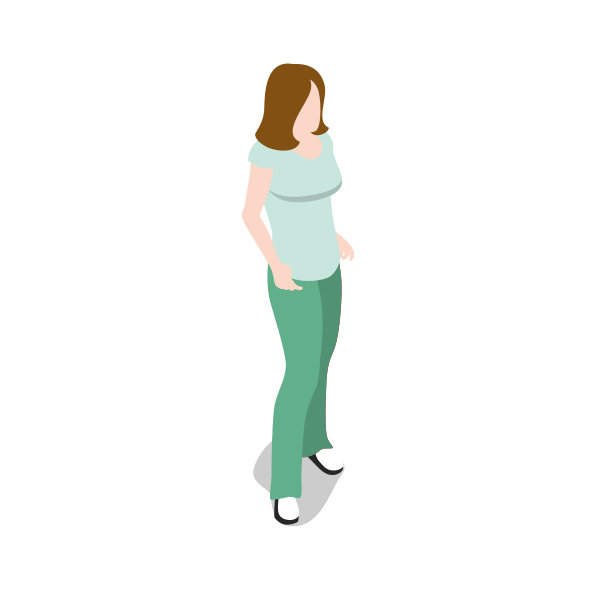
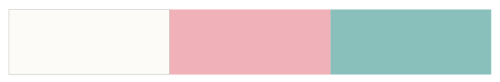

01.ターゲット
大学生(20)
宮城県在住。
歴史への関心はあまり高くない。
02.行動設計
地域柄、食卓に鯨が並ぶことがしばしばある。今までは 何気なく食していた鯨が神様として祀られている行事があることを知り、鯨に興味を持ち、調べ始める。
QRコードからサイトへ。
｜
鯨供養についての物語を知る。
｜
生き物への感謝について考える。
- genre
- style
- tool
- season
ロゴデザイン・ウェブデザイン
課題制作
illustrator｜HTML｜css｜JavaScript
2020.10.12～2021.01.14.
身近なものへの感謝のかたちについて考える
鯨絵巻は、クジラと人のかかわりの歴史を学ぶウェブサイトです。
「東北地方における祈り」をテーマに扱った授業内で、グループでこの作品に取り組みました。私たちは動物の神格化に焦点をあてて研究を行いました。動物への信仰や感謝について考えてもらうきっかけづくりとして、クジラの供養の歴史を物語に沿って伝えるサイトを制作しました。
私は、サイト全体のUIデザインと、HTML、css、JavaScriptを用いたコーディングを行いました。
具体的な事物を神とみなす
神格化とは、自然物や現象、生物など、具体的な事物を神とみなすことを指します。
日本では八百万の神々という考え方があり、この世のすべてのものには神が宿るという意識が持たれています。狼のように畑を荒らす動物を追い払う動物や、鯨のように人々に恵みをもたらす生き物もまた、山や海といった自然の神々の使いや、その変化した姿として信仰の対象となることがありました。
人は様々なものから恩恵や利益を得ており、それに対する感謝や追悼の気持ちを、建築物や行事でかたちにしてきました。
暮らす宮城県でも鯨を祀る行事が行われていますが、若者からの知名度はあまり高くありません。そこで、地域で大切にされている鯨について、その地域に住む若者が知り、興味を抱くきっかけになるコンテンツを思案しました。
昔から今までの鯨と人とのかかわりがどのようなものであったか、それが今どのように活かされているか、歴史を伝えるウェブサイトを制作しました。
「鯨に対する昔の人々の供養の物語を伝え、身近なものへの感謝のかたちについて考えるきっかけづくりを。」をコンセプトに、自分たちの住む土地と動物との関係に関心を持ってもらえる作品を目指しました。
本作品ではクジラに焦点をあてて調査を行い、動物の神格化について考察しました。昔から今まで、私たちの暮らしを支えたり、守ったりしてきた動物とのかかわりの歴史を伝えることを目的に思案しました。
絵巻物をモチーフにし物語性を表現
右から左へと少しずつ目を移して見ていくため物語性があり、画面に時間的・空間的な展開が生まれることから、絵巻物をモチーフにしています。
絵巻で使われる異時同図法という手法は、時間的に発展する事柄を描くのに適しています。当ウェブサイトでは人と鯨のかかわりを時系列順に説明しているため、全ての時代を物語のようにまとまりを持って見てもらうことができると考えました。
出来事とその背景を知る
関わり方の歴史を伝えるだけでなく、その時代の人々の思想や考え方、鯨という生き物の捉え方を詳しく知るコンテンツを設けました。
現代にいたるまでの歴史だけでなく、その背景に気づくことができます。
01.ターゲット
大学生(20)
宮城県在住。
歴史への関心はあまり高くない。
02.行動設計
地域柄、食卓に鯨が並ぶことがしばしばある。今までは 何気なく食していた鯨が神様として祀られている行事があることを知り、鯨に興味を持ち、調べ始める。
QRコードからサイトへ。
｜
鯨供養についての物語を知る。
｜
生き物への感謝について考える。
01.Color
優しい色合い印象を与えるために、全体的に淡い色を用いています。
02.Text
本文には、貂明朝を採用しています。また、サイト内に登場する難しい漢字にはルビをふることで、歴史にあまり詳しくない人たちにとっても読みやすくなるようにしました。